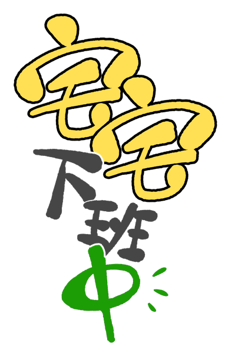

ON AIR · 每週五 11:00（台灣）
節目製作看板
資料來源：Google Sheet｜在 Sheet 新增或修改，重新整理本頁即同步
本週四人看板
紅線那一週的待辦清單 —— 勾選追蹤進度（勾勾存在你自己的裝置上）。
👥 職責範圍
布菇
｜時間軸監督——所有 🚨 逾期、⚠ 死線、未指派項目自動歸入她的看板追蹤
阿植
｜排程上架（依 Sheet 排程欄指派給任何人；留空預設阿植）
大酸梅
｜參與的文案與剪輯（依 Sheet 文案／剪輯欄指派）＋擔任講者的集數閱讀與錄音
趴趴熊
｜參與的文案與剪輯（依 Sheet 文案／剪輯欄指派）＋擔任講者的集數閱讀與錄音
選題
（✓=已定）
閱讀
錄音
文案＋剪輯
排程
🎙
錄音日已定
備用庫存
個人節目
載入中…
◀ 上一週
下一週 ▶
回到今天
↻ 重新載入資料
點日期標頭移動紅線；下方切面跟著更新
Google Sheet 欄位格式（第一列為標題列，順序不限，可有多餘欄位）：
①
播出日期
：YYYY/MM/DD，須為週五；墊檔集留空。②
類型
：推薦／個人／墊檔（其他文字視同「推薦」）。③
講者
：這集上場的人，可多人（例：梅、熊）；閱讀與錄音會指派給講者。找不到「講者」欄時退回讀「選書人」欄。④
作品
：可留空＝已排檔期待選題，逾期會顯示 🚨。⑤
錄音日期
：任何集數皆可填，會顯示 🎙 圓點且切面以實際日期為準；晚於播出前四週會警示。⑥
文案
：撰寫文案的人。⑦
剪輯
：剪輯的人。⑧
排程
：可留空，預設阿植。⑨
電子書
：核取方塊——勾選（TRUE）顯示 📖 電子書標記；未勾選（FALSE）或空白不顯示。填文字（如平台名 BookWalker）也可以，會一併顯示。⑩
完成追蹤欄
：錄音安排完成日期（死線＝播出前 11 週；已填錄音日期欄視同完成）、錄音完成（前 4 週）、文案完成日期／剪輯完成日期（前 2 週）、排程完成日期（前 1 週）——
填入日期後，對應待辦的核取方塊會自動打勾並顯示完成日期（全隊一致，以 Sheet 為準）
；留空且超過死線：節目未播出者顯示在頁面上方 🚨 進行中警戒，已過播出時間者沉到頁面最底的 🗂 紀錄區。⑪
備註
：自由填寫。
人名寫法
：全名或簡稱皆可辨識（大酸梅／酸梅／梅、阿植／植、趴趴熊／熊、布菇／菇），多人用頓號或逗號分隔。
管線規則
：選題（前 13–11 週）→ 閱讀（前 11–5 週）→ 錄音完成（前 4 週）→ 文案剪輯完成（前 2 週）→ 排程完成（前 1 週）。